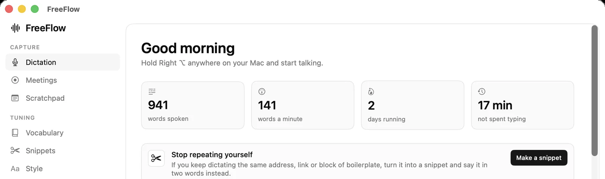
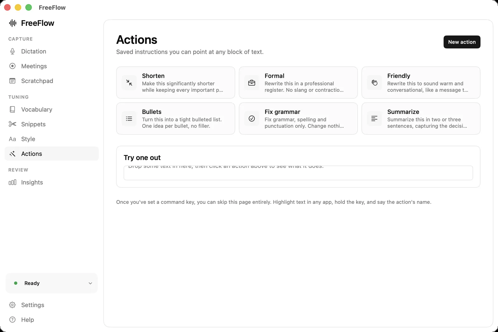
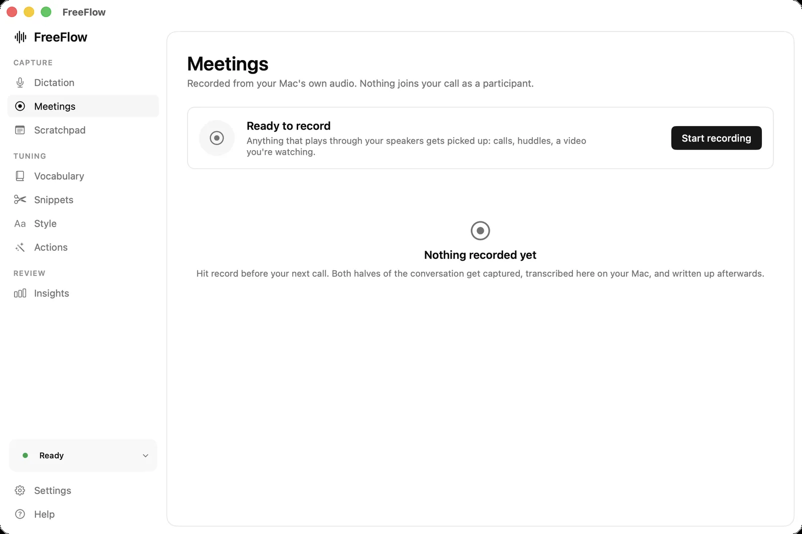
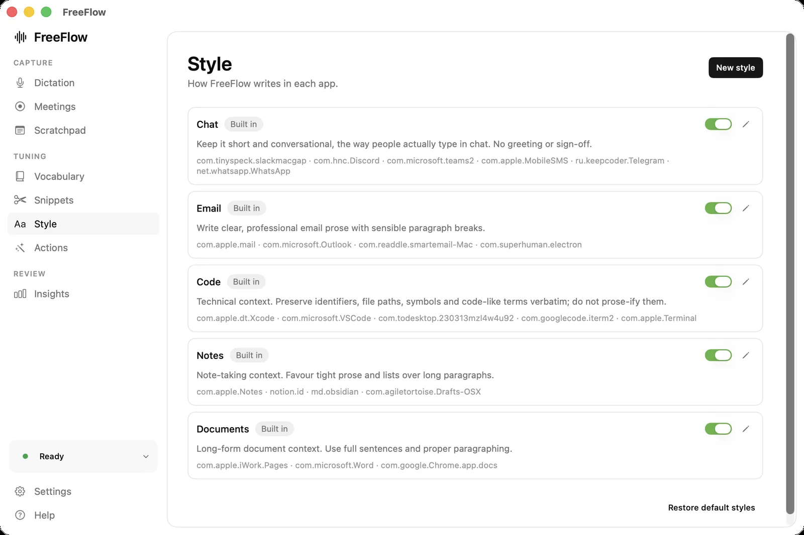
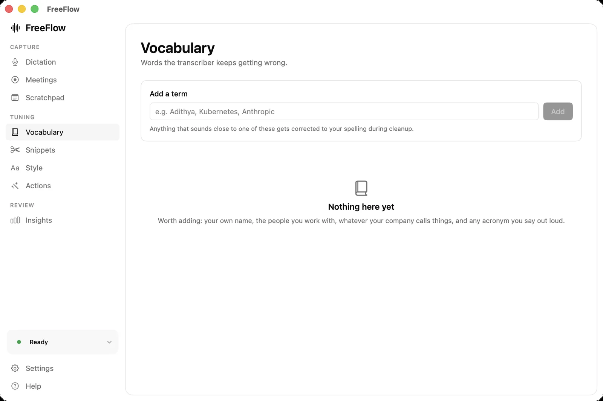
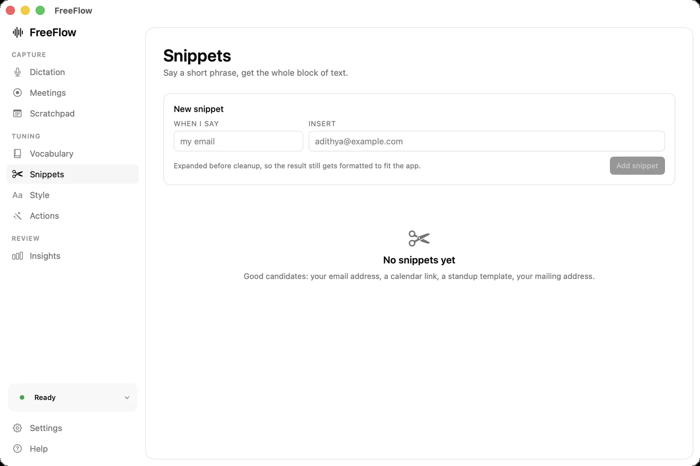
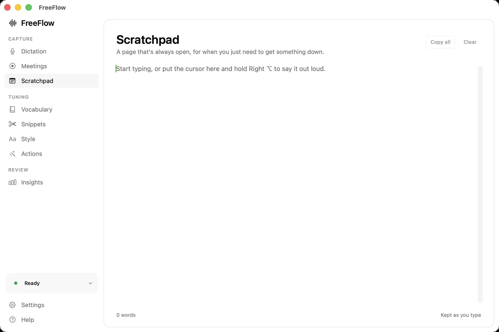
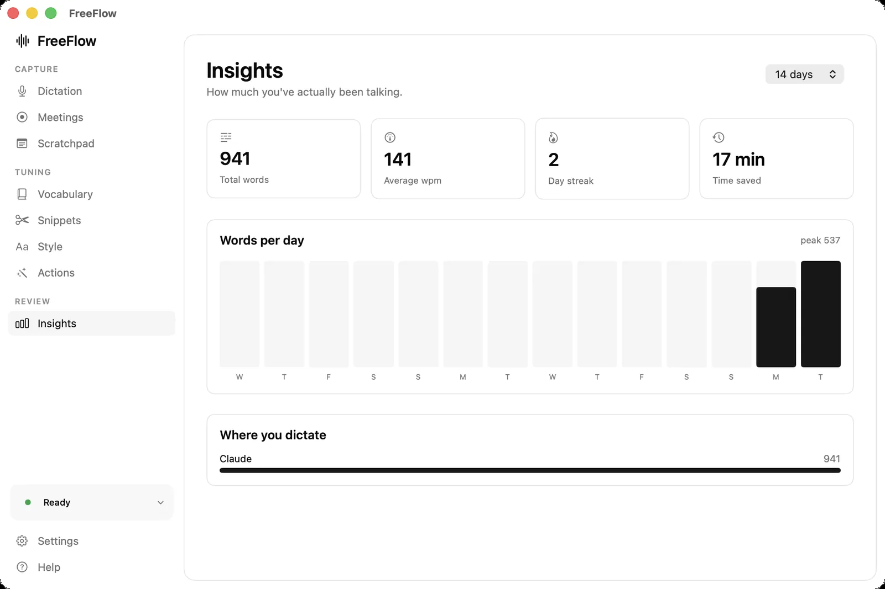

Dictation
Hold, talk, release. Text lands at the cursor. Tap instead to latch it on.

macOS / open source / runs offline
Transcribed on your Mac. Cleaned up before it lands. No account, no upload, no subscription.
01 / the gap
3× faster. Always has been.
So why do you still type? Because raw speech-to-text hands you something you would never send to another person.
um so i was thinking uh maybe we could push the launch to next week
I was thinking we could push the launch to next week.
That gap is the entire product.
02 / the part nobody shows
Keep scrolling
03 / everything in the box
Hold, talk, release. Text lands at the cursor. Tap instead to latch it on.

Select text, say “cut this in half”. The rewrite replaces it.

Records both sides off your Mac's audio. No bot joins the call.

Slack and Pages shouldn't sound the same. Per-app rules.

Your name, your colleagues, the words it keeps mangling.

Say two words, insert a paragraph. Expanded before cleanup runs.

Always open. For the thought with nowhere to live yet.

How much you said, how fast, and where it went.

fn by default. Chords are ignored, so ⌘C still copies.
04 / it never leaves
The model runs on your machine. There is no account, because there is nothing to log in to.
edge of your Mac
One switch and it makes zero network requests. Pull the wifi. It still works.
All of it on GitHub under MIT. No credentials in the tree.
Bring your own Groq key. Free tier, no card. Or skip it entirely.
05 / get it running
No download. Shipping a warning-free Mac app needs a paid Apple account, and this doesn't have one. So you build it. Four commands.
Full detail, including how to stop macOS forgetting your permissions on every rebuild, lives in the README.
06 / straight answers
Free. MIT, no paid tier planned. Cleanup runs on Groq's free tier, which doesn't ask for a card.
No. Whisper runs locally. With cleanup on, only the text goes to Groq. Turn it off and nothing leaves.
Gatekeeper-free distribution costs $99/yr. This is a free project. Building takes ten minutes.
Apple's transcribes. It doesn't punctuate, cut fillers, learn names, or change tone per app. That pass is the point.
No. The event tap observes without consuming, and a trigger only counts when held alone.
Yes. Accessibility write first (clipboard untouched), falling back to ⌘V. Slack, Discord, VS Code.